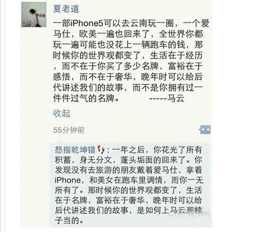

Conversation with 81184027 at Thu 02 Jan 2014 05:49:57 PM CST on 154115835 (webqq)
(05:49:56 PM) 2965199383: 发表动态 17:16:32
"惹砰樾嘧弊儋"
http://group.store.qq.com/qun/V12ihObj00xqJH/V2t2gIDQ1suxVJIs0cc/100 查看
(05:49:56 PM) 球球: 发表动态 17:16:32
"惹砰樾嘧弊儋"
http://group.store.qq.com/qun/V12ihObj00xqJH/V2t2gIDQ1suxVJIs0cc/100 查看
(01/02/2014 09:22:48 AM) 阿尔卑斯☆⌒_⌒☆博: 还有什么神额
(01/02/2014 05:16:30 PM) 球球:
(01/01/2014 08:40:22 PM) 咨询师-泪: 0.0
(01/02/2014 12:27:28 PM) pastorqi: 1月2日，2014年的第2天。
愿我们收获活水吗哪，发出对神的感谢赞美。
跟随主,走荣神、益人、自己得操练的道路
旧约 创世记 3:-4:
诗 篇 2:
箴 言 1:7-9
新约 马 太 2：13-3:6
有代祷事宜请告知
(01/02/2014 03:56:24 PM) 球球: 信誉好，下卡快，易批准，为您轻松理财 咨询+qQ 415921666
3到5天下卡 无需抵押,安全无忧,
(01/02/2014 05:16:31 PM) 球球:
(01/02/2014 05:16:31 PM) 球球:
(01/01/2014 05:19:40 PM) 何弟兄: 2014， 爱你一世！
(06:00:57 PM) 상상무한: 这个笑话很有意思啊
(06:04:13 PM) 光: 马云说的对
(06:05:46 PM) 상상무한: 都对
(06:06:01 PM) 상상무한: 看你想要什么了呗
(06:06:26 PM) 光: 豆瓣有一个人
(06:06:35 PM) 光: 叫做赵行德
(06:06:38 PM) 光: 就是前者
(06:06:46 PM) 光: 现在都混到太空去了
(06:06:51 PM) 埃及无雪: 愿意成为马云说的那样
(06:07:03 PM) 光: 嗯
(06:07:20 PM) 埃及无雪: 内心充实最重要呢
(06:07:39 PM) 상상무한: 有的人就追求物欲
(06:08:36 PM) 埃及无雪: 如果有条件两者都有也挺好:D:D:D
(06:16:38 PM) 光: 前者其实是美国年轻人的观念
(06:16:49 PM) 光: 后者可能是国内年轻人的观念
(06:25:31 PM) 埃及无雪: 国内年轻人压力大，国人观念不同及社会福利太差造成
(06:26:01 PM) 埃及无雪: 中国人穷怕了:D:D:D
(06:26:15 PM) 光: 国内年轻人没有这个想法可能是中国的护照没有美国人或者台湾人的好使
(06:26:45 PM) 光: 美国人毕业确实先玩再工作的
(06:27:21 PM) 埃及无雪: 护照再好使也没用:D
(06:27:41 PM) 埃及无雪: 整个大环境就不对呢
(06:29:31 PM) 埃及无雪: 以前饭都吃不饱，现在好歹还是能看到很多人出去游玩，懂得享受生活了，已经是很大的进步了，慢慢来
(06:29:44 PM) 光: 嗯
(06:33:16 PM) 埃及无雪: 我在丽江碰到一个90后的男生，大学休学1年，专门环游中国，人很能说，性格好，特别羡慕
(06:33:37 PM) 埃及无雪: 这样的孩子现在很多了
(06:34:09 PM) 光: 嗯
(11:55:50 AM) The account has disconnected and you are no longer in this chat. You will automatically rejoin the chat when the account reconnects.